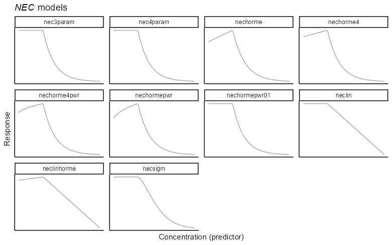
Model averaging and multi-model inference
Using the whole candidate set rather than choosing one equation
Background
Modules 2 and 3 fitted single models and set out the equations available. Both bayesnec and drc (Ritz et al. 2015) offer more than twenty non-linear functions for concentration-response data, in two broad shapes.

Choosing among the equations
Sometimes physiological or toxicological mechanism argues for a threshold (Chapman and Wang 2000). That is not always known, a threshold is not always visible in the data, and even where a threshold is appropriate the functional form of the decline after it may not be.
Without a mechanistic argument, the choice has to be made from the data. Metrics exist for this — AICc in the frequentist setting, and WAIC, DIC, model probabilities and others in the Bayesian setting. The difficulty is that many of these curves are similar in shape, so several will often fit a dataset about equally well. Model uncertainty is then high and the selection is close to arbitrary, while the estimate reported depends on which equation was picked.
Multi-model inference
The alternative is not to choose. All the plausible models are fitted and used together, which is multi-model inference, and it is useful in exactly the case above: several plausible models and no basis for preferring one.
This is the basis of model averaging (Burnham and Anderson 2002), which is long established in ecology (see Dormann et al. 2018 for a review).
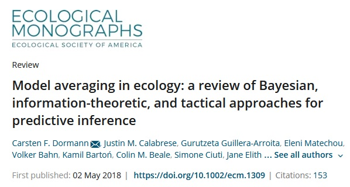
Model averaging
Model averaging fits a candidate set and combines the estimates of interest, weighted by how well each model fits the data (Burnham and Anderson 2002). In the frequentist case the weights are usually AICc weights.
A well-fitting model takes a high weight and dominates the result. A poorly fitting one takes a weight near zero and has little influence. Where several models fit equally well they contribute comparably, and the resulting posterior carries the uncertainty in model shape as well as in the parameters. That is the substantive gain: an interval from a single chosen equation is conditional on that equation being right, and does not reflect the fact that it was chosen.
AICc-based averaging has been adopted in ecotoxicology for species sensitivity distributions (Thorley and Schwarz 2018; Fox et al. 2021; Dalgarno 2021). David Fox’s course on SSD model averaging in R covers that application.
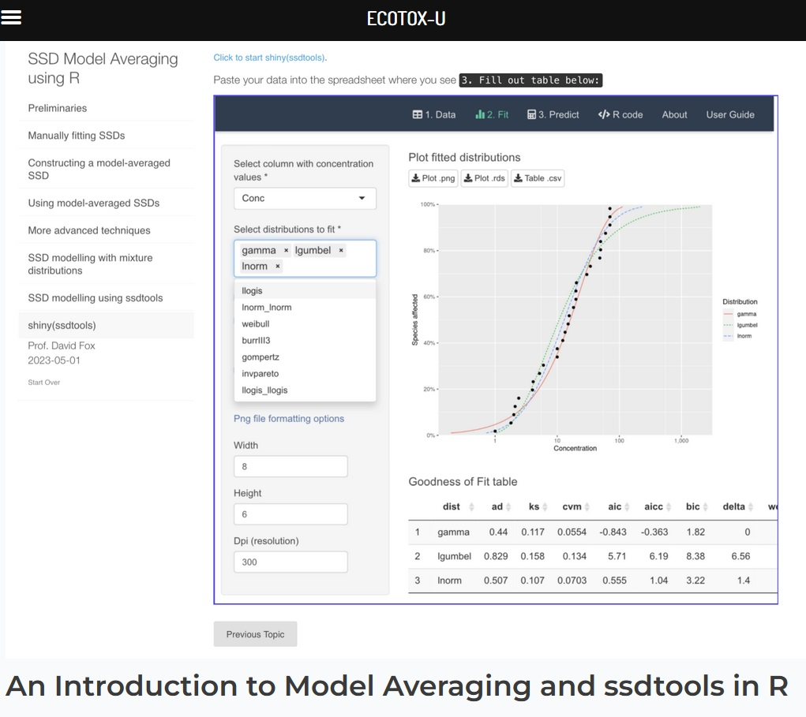
Model averaging in bayesnec
What bnec returns depends on how many equations it is given.
A single recognised model name fits one model and returns a bayesnecfit, which is what modules 2 and 3 used. Two or more names, or the name of a model set, fits each in turn and returns a bayesmanecfit holding the Bayesian model-averaged predictions over those that fitted successfully.
Both compute time and object size scale with the size of the set. Every model is sampled by Hamiltonian Monte Carlo, so a large set is slow and the result is large. Module 2 measured a single nec3param fit of these data at a little over two minutes; a set of twenty-three is not twenty-three times more convenient.
Combining single fits
Any model fitted by bnec inherits class bnecfit, which carries two methods of its own, + and c. Either will append fits to one another, so two or more bayesnecfit objects can be combined into a model-averaged bayesmanecfit.
Starting from the nec3param fit of module 2:
set.seed(333)
data(nec_data)
bnec_fit <- bnec(y ~ crf(x, model = "nec3param"), data = nec_data)Finding initial values which allow the response to be fitted using a nec3param model and a beta distribution.Compiling Stan program...Start samplingResponse variable modelled as a nec3param model using a beta distribution.Warning: Found 1 observations with a pareto_k > 0.7 in model 'nec3param'. We
recommend to set 'moment_match = TRUE' in order to perform moment matching for
problematic observations.Warning:
2 (2.0%) p_waic estimates greater than 0.4. We recommend trying loo instead.and adding a second equation of a different shape — ecxll3, a three-parameter log-logistic curve with no threshold:
set.seed(333)
bnec_fit_new <- bnec(y ~ crf(x, model = "ecxll3"), data = nec_data)Finding initial values which allow the response to be fitted using a ecxll3 model and a beta distribution.Compiling Stan program...Start samplingResponse variable modelled as a ecxll3 model using a beta distribution.Warning:
3 (3.0%) p_waic estimates greater than 0.4. We recommend trying loo instead.The fitted ecxll3 curve does not fall to the control's 0.01 quantile within the predictor range for 80 of 8000 draws. Those draws are excluded from the NSEC summary, which is therefore censored above the highest concentration tested.autoplot(bnec_fit_new)Ignoring unknown labels:
• fill : "NA"
• colour : "NA"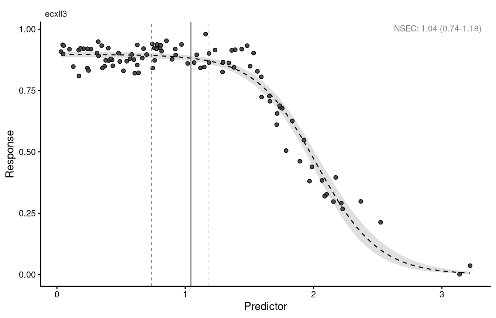
ecxll3 fit. The annotated no-effect estimate is an NSEC, because this equation has no threshold parameter.
The two are combined with c():
bmanecfit <- c(bnec_fit_new, bnec_fit)Fitted models are: ecxll3 nec3paramThe fitted ecxll3 curve does not fall to the control's 0.01 quantile within the predictor range for 80 of 8000 draws. Those draws are excluded from the NSEC summary, which is therefore censored above the highest concentration tested.class(bnec_fit_new)
class(bnec_fit)
class(bmanecfit)[1] "bayesnecfit" "bnecfit"
[1] "bayesnecfit" "bnecfit"
[1] "bayesmanecfit" "bnecfit" amend() adds or drops models from an existing set, or changes the weighting method, and pull_out() extracts one or more models back out of it. Adding a third equation:
bmanecfit_more <- amend(bmanecfit, add = "ecxexp")Finding initial values which allow the response to be fitted using a ecxexp model and a beta distribution.Compiling Stan program...Start samplingResponse variable modelled as a ecxexp model using a beta distribution.Fitted models are: ecxll3 nec3param ecxexpThe fitted ecxll3 curve does not fall to the control's 0.01 quantile within the predictor range for 80 of 8000 draws. Those draws are excluded from the NSEC summary, which is therefore censored above the highest concentration tested.Warning: Found 1 observations with a pareto_k > 0.7 in model 'ecxexp'. We
recommend to set 'moment_match = TRUE' in order to perform moment matching for
problematic observations.Warning:
2 (2.0%) p_waic estimates greater than 0.4. We recommend trying loo instead.The fitted ecxexp curve does not fall to the control's 0.01 quantile within the predictor range for 80 of 8000 draws. Those draws are excluded from the NSEC summary, which is therefore censored above the highest concentration tested.Plotting an averaged fit
autoplot() works on a bayesmanecfit as it does on a single fit.
autoplot(bmanecfit_more)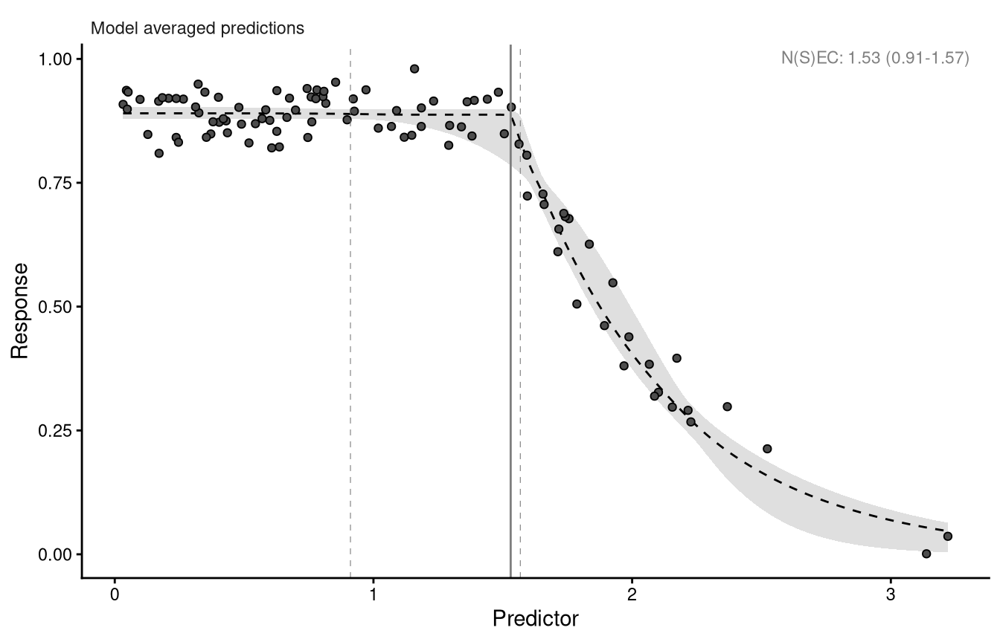
The plot looks like the single-model plot, but the curve and its interval are a weighted average over the set. The intervals often look less smooth than those from a single fit, because they now include uncertainty in the shape of the curve and not only in its parameters.
The no-effect estimate annotated here, and reported in the summary below, mixes two quantities: NEC values from the threshold equations in the set, and NSEC values (Fisher and Fox 2023) standing in for them in the smooth equations. Module 3 covers why those are different.
The summary
summary(bmanecfit_more)Object of class bayesmanecfit
Family: beta
Links: mu = identity
Number of posterior draws per model: 8000
Model weights (Method: pseudobma_bb_weights):
waic wi
ecxll3 -314.17 0.20
nec3param -332.36 0.80
ecxexp -119.80 0.00
Summary of weighted N(S)EC posterior estimates:
NB: Model set contains a combination of ECx and NEC
models, and is therefore a model averaged
combination of NEC and NSEC estimates.
Estimate Q2.5 Q97.5
N(S)EC 1.53 0.91 1.57
Bayesian R2 estimates:
Estimate Est.Error Q2.5 Q97.5
ecxll3 0.94 0.01 0.93 0.95
nec3param 0.96 0.00 0.96 0.97
ecxexp 0.38 0.06 0.24 0.49Warning in print.manecsummary(x): control observed/simulated ratio beyond 1.15 (see ?check_fit):
- ecxexp
This is a modelling result rather than a fault; inspect with check_fit().The fitted models are listed with their weights. The summary warns that the averaged no-effect estimate contains NSEC values, and would warn again if any fit had divergent transitions.
nec3param takes most of the weight here, which is what should happen: these data were simulated from that equation. The Bayesian R² values show how little of the variation the smooth exponential decline accounts for.
Elements of the fitted object
mod_stats holds the fit statistics for every model in the set: the model name, the WAIC as returned by brms, the weight wi, and dispersion estimates where the response is modelled with a Poisson or binomial distribution.
bmanecfit_more$mod_stats model waic wi dispersion_Estimate dispersion_Q2.5
ecxll3 ecxll3 -314.1675 1.981754e-01 NA NA
nec3param nec3param -332.3612 8.018246e-01 NA NA
ecxexp ecxexp -119.7985 8.427134e-39 NA NA
dispersion_Q97.5 dispersion_P_over_1
ecxll3 NA NA
nec3param NA NA
ecxexp NA NAThe individual fits are retained and can be extracted with pull_out():
bmanec_ecxexp <- pull_out(bmanecfit_more, model = "ecxexp")Pulling out model(s): ecxexpEvery model in the set
autoplot(bmanecfit_more, all_models = TRUE)Ignoring unknown labels:
• fill : "NA"
• colour : "NA"
Ignoring unknown labels:
• fill : "NA"
• colour : "NA"
Ignoring unknown labels:
• fill : "NA"
• colour : "NA"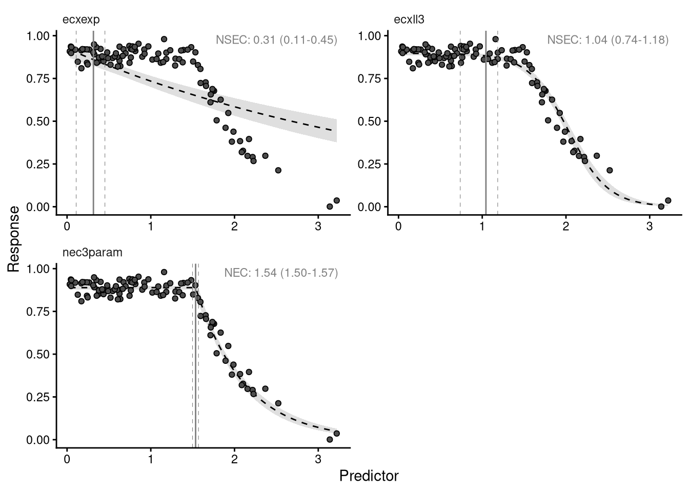
ecxexp fits these data badly, which is why its weight is near zero. A poor model with a negligible weight does no harm, because it cannot influence the averaged prediction.
The check that matters is whether a poor fit is a poor shape or a failed sampler. A model that has not converged should be removed; a converged model whose shape simply does not suit the data can be left in.
Diagnostics across a set
pull_out() gives back a single fit, so any of the brms diagnostics apply. Taking the worst model in the set:
plot(pull_brmsfit(bmanecfit_more, "ecxexp"))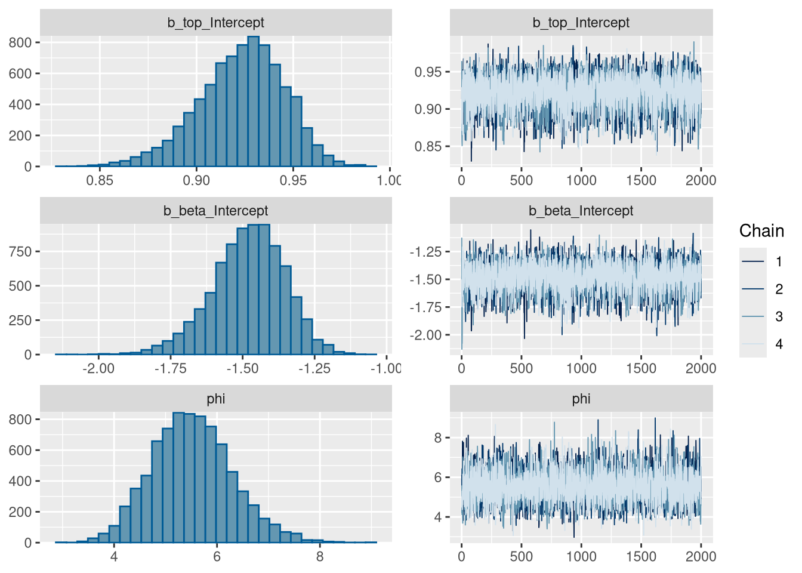
ecxexp, the worst-fitting equation in the set.
The chains are well mixed. The model is a bad description of these data and a perfectly converged fit, which are different things.
Checking every model this way does not scale. check_chains() handles a whole set, and given a filename it writes the plots to a PDF in the working directory rather than to the screen:
check_chains(bmanecfit_more, filename = "bmanecfit_more_all_chains")check_chains(bmanecfit_more)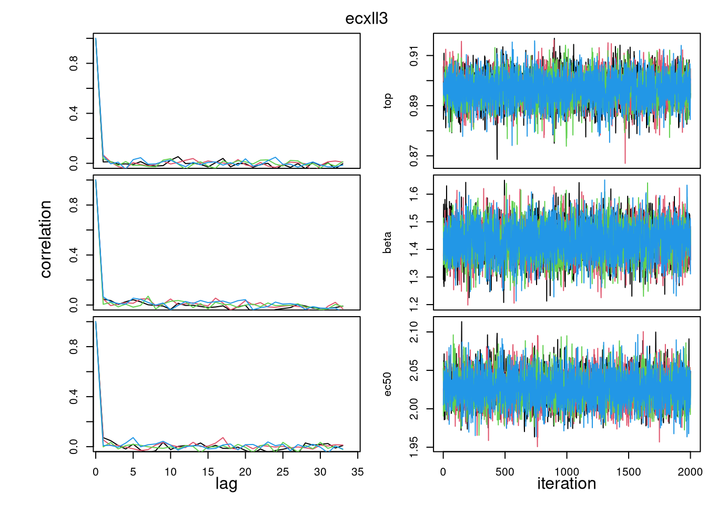
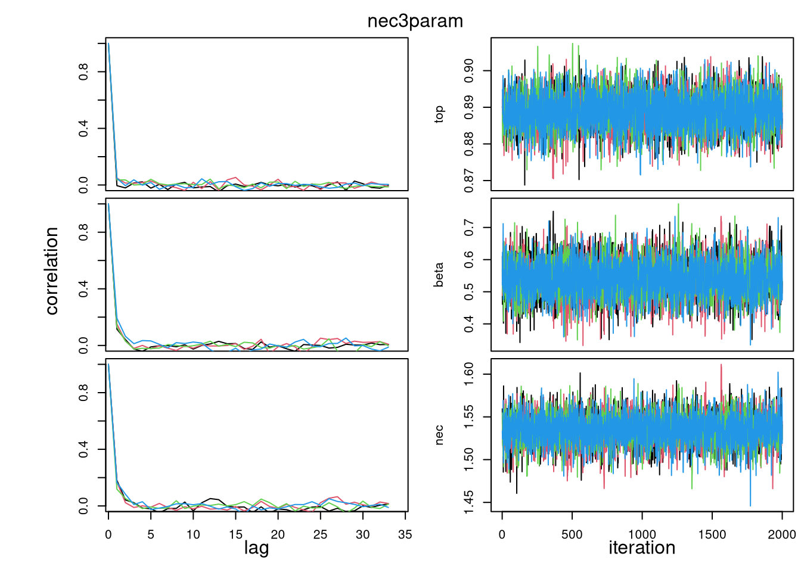
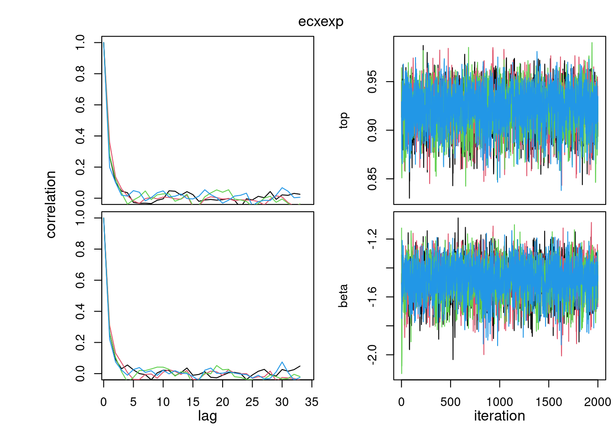
Weighting methods
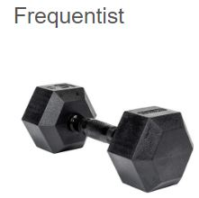
In the frequentist setting AICc weights are standard and relate to the likelihood of the data given each model. The SSD course linked above treats them in detail.
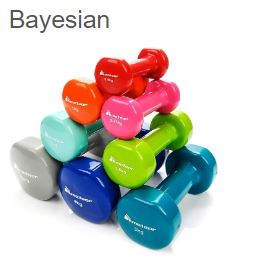
Bayesian weighting is less settled and there are many candidate methods. A full treatment is outside the scope of this course; what follows is what bayesnec does and why.
Weights in bayesnec
bayesnec uses the weighting implemented in loo (Vehtari et al. 2020), which performs approximate leave-one-out cross-validation for models fitted by MCMC (Vehtari et al. 2017), using Pareto-smoothed importance sampling to regularise the importance weights (Vehtari et al. 2019).
loo offers two methods.
Stacking minimises prediction error by maximising the leave-one-out predictive density of the combined distribution (Yao et al. 2018; Vehtari et al. 2020). It prioritises the accuracy of the joint prediction.
Pseudo-BMA takes weights proportional to the expected log pointwise predictive density of each model (Vehtari et al. 2020), estimating relative predictive accuracy. It can be combined with a Bayesian bootstrap, which accounts for the uncertainty of a finite sample and pulls the weights away from 0 and 1.
Stacking is the default. bayesnec passes no method of its own, so loo’s own default applies, and the summary above names it: Method: stacking_weights. Earlier versions of bayesnec documented pseudo-BMA with the Bayesian bootstrap as the default, on the grounds that it behaved much as AICc weights do. Weights from an older analysis are therefore not comparable with weights computed now, which is one more reason to record the version alongside the models fitted.
The method is changed through the loo_controls argument of bnec() or amend(), which takes a named list with elements fitting and weights.
Model sets
Rather than naming equations individually, a named set can be passed to bnec():
models()$nec
[1] "nec3param" "nec4param" "nechorme" "nechorme4"
[5] "necsigm" "neclin" "neclinhorme" "nechormepwr"
[9] "nechorme4pwr" "nechormepwr01"
$ecx
[1] "ecx4param" "ecxlin" "ecxexp" "ecxsigm" "ecxwb1"
[6] "ecxwb2" "ecxwb1p3" "ecxwb2p3" "ecxll5" "ecxll4"
[11] "ecxll3" "ecxhormebc4" "ecxhormebc5"
$all
[1] "nec3param" "nec4param" "nechorme" "nechorme4"
[5] "necsigm" "neclin" "neclinhorme" "nechormepwr"
[9] "nechorme4pwr" "nechormepwr01" "ecxlin" "ecxexp"
[13] "ecxsigm" "ecx4param" "ecxwb1" "ecxwb2"
[17] "ecxwb1p3" "ecxwb2p3" "ecxll5" "ecxll4"
[21] "ecxll3" "ecxhormebc4" "ecxhormebc5"
$bot_free
[1] "nec3param" "nechorme" "necsigm" "neclin"
[5] "neclinhorme" "nechormepwr" "ecxlin" "ecxexp"
[9] "ecxsigm" "ecxwb1p3" "ecxwb2p3" "ecxll3"
[13] "ecxhormebc4" "nechormepwr01"
$zero_bounded
[1] "nec3param" "nechorme" "necsigm" "nechormepwr"
[5] "nechormepwr01" "ecxexp" "ecxsigm" "ecxwb1p3"
[9] "ecxwb2p3" "ecxll3" "ecxhormebc4"
$decline
[1] "nec3param" "nec4param" "neclin" "ecxlin" "ecxexp" "ecxsigm"
[7] "ecx4param" "ecxwb1" "ecxwb2" "ecxwb1p3" "ecxwb2p3" "ecxll5"
[13] "ecxll4" "ecxll3"
$hormesis
[1] "nechorme" "nechorme4" "neclinhorme" "nechormepwr"
[5] "nechorme4pwr" "nechormepwr01" "ecxhormebc4" "ecxhormebc5" The sets are not mutually exclusive, and bayesnec discards any model in the set that is unsuitable for the statistical distribution of the response, which module 5 covers.
nec and ecx are the threshold and smooth equations respectively.
all is every available equation. It currently includes necsigm, which should not be used; remove it with amend() if fitting the whole set.
bot_free are the equations with no lower asymptote, which are useful when the response curve is incomplete and estimates are needed beyond the observed range.
zero_bounded are those for which negative response values are invalid.
decline excludes the hormesis equations and is the most generally useful set where there is no evidence of hormesis.
hormesis are the equations allowing an initial increase.
Open questions
Model averaging is well established in ecology (Dormann et al. 2018) but relatively new to ecotoxicology (see Thorley and Schwarz 2018; Fox et al. 2021; Wheeler and Bailer 2009).
How the composition of the candidate set affects inference is not settled. Some work suggests a broad set is preferable (Wheeler and Bailer 2009); other work indicates that including several equations of similar shape over-represents that shape in the averaged prediction (Fox et al. 2021). Adding or removing models can change the averaged estimates substantially, ECx values included.
The set available in bayesnec changes between versions. Record which equations were actually fitted in an analysis, not merely which set was requested, or the result cannot be reproduced later.
References
Burnham, K P, and D R Anderson. 2002. Model Selection and Multimodel Inference; A Practical Information-Theoretic Approach. 2nd ed. Springer.
Dalgarno, Seb. 2021. “: A Web Application for Fitting Species Sensitivity Distributions (SSDs).” Journal of Open Source Software 6 (57): 2848. https://doi.org/10.21105/joss.02848.
Dormann, Carsten F., Justin M. Calabrese, Gurutzeta Guillera-Arroita, et al. 2018. “Model Averaging in Ecology: A Review of Bayesian, Information-Theoretic, and Tactical Approaches for Predictive Inference.” Ecological Monographs 88 (4): 485–504. https://doi.org/10.1002/ecm.1309.
Fisher, Rebecca, and David R. Fox. 2023. “Introducing the No-Significant-Effect Concentration.” Environmental Toxicology and Chemistry n/a (n/a). https://doi.org/https://doi.org/10.1002/etc.5610.
Fox, D R, R A van Dam, R Fisher, et al. 2021. “Recent developments in Species Sensitivity Distribution Modeling.” Environmental Toxicology and Chemistry 40 (2): 293–308. https://doi.org/https://doi.org/10.1002/etc.4925.
Ritz, Christian, Florent Baty, Jens C Streibig, and Daniel Gerhard. 2015. “Dose-Response Analysis Using R.” PLoS ONE 10 (12): e0146021. https://doi.org/10.1371/journal.pone.0146021.
Thorley, Joe, and Carl Schwarz. 2018. ssdtools: Species Sensitivity Distributions. https://CRAN.R-project.org/package=ssdtools.
Vehtari, Aki, Jonah Gabry, Mans Magnusson, et al. 2020. Loo: Efficient Leave-One-Out Cross-Validation and WAIC for Bayesian Models. https://mc-stan.org/loo/.
Vehtari, Aki, Andrew Gelman, and Jonah Gabry. 2017. “Practical Bayesian Model Evaluation Using Leave-One-Out Cross-Validation and WAIC.” Statistics and Computing 27: 1413–32. https://doi.org/10.1007/s11222-016-9696-4.
Vehtari, Aki, Daniel Simpson, Andrew Gelman, Yuling Yao, and Jonah Gabry. 2019. Pareto Smoothed Importance Sampling. arXiv. https://doi.org/10.48550/ARXIV.1507.02646.
Wheeler, Matthew W., and A. John Bailer. 2009. “Comparing Model Averaging with Other Model Selection Strategies for Benchmark Dose Estimation.” Environmental and Ecological Statistics 16: 37–51. https://doi.org/10.1007/s10651-007-0071-7.
Yao, Yuling, Aki Vehtari, Daniel Simpson, and Andrew Gelman. 2018. “Using Stacking to Average Bayesian Predictive Distributions (with Discussion).” Bayesian Analysis 13: 917–1007.